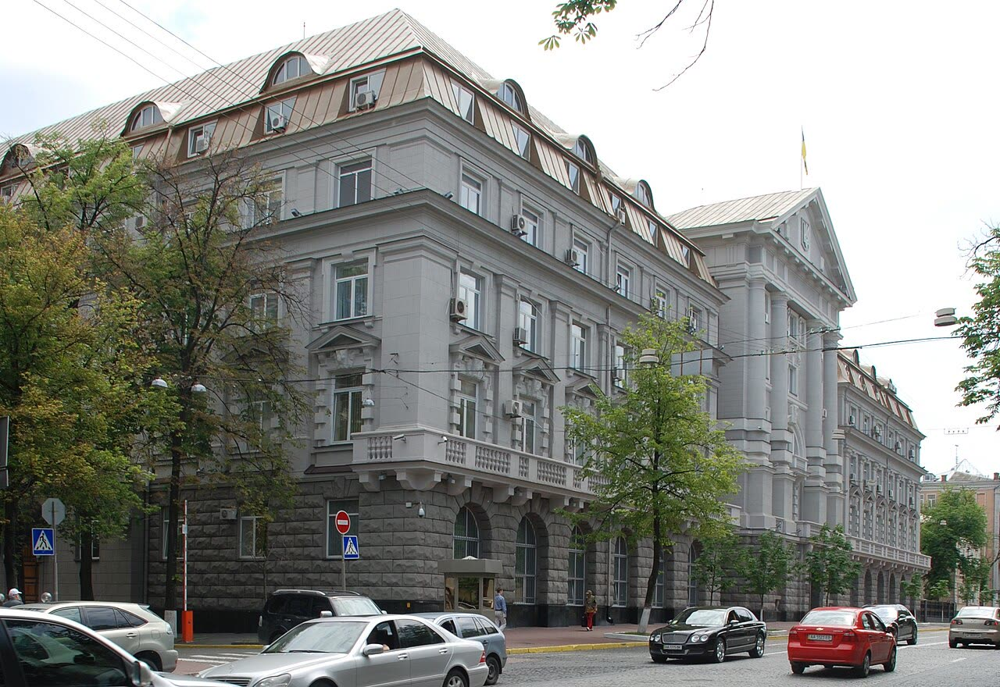

Ucraina, l'ex portavoce di Zelensky Mendel sospettata di tradimento
Smentire le sue parole è un diritto di Kiev; trattarle come tradimento senza altre prove no. Un paese che vuole entrare nell'UE si misura anche su questo.
Redazione Contrappunto · aggiornato il 03.11.2026


Iuliia Mendel è stata portavoce del presidente ucraino Volodymyr Zelensky dal 2019 al 2021 ed è poi diventata una sua critica, finita sotto sanzioni a settembre. Il 3 novembre l'SBU, il servizio di sicurezza interno, e la Procura generale dicono che è sospettata di tradimento in contumacia, perché è all'estero. Un sospetto non è una condanna: la sua colpevolezza deve essere provata in tribunale. La domanda è di stato di diritto: in un paese in guerra, e che chiede di entrare nell'UE, quando una parola diventa un reato?
Vedi di più: 3 parole spiegate, cosa si racconta
Cosa si raccontaKyiv Independent e Meduza riportano l'accusa dell'SBU e della Procura: attività informativa e sovversiva contro l'Ucraina e giustificazione del regime del Cremlino e della guerra, basate in parte su dichiarazioni pubbliche, tra cui l'intervista al conduttore americano Tucker Carlson. Il Kyiv Independent riporta la replica di Mendel: il caso nasce da sue parole pubbliche. Reuters, a settembre, aveva raccontato le sanzioni decise da Zelensky. [The Kyiv Independent] [Meduza] [Reuters] [Domani]
- SBU
- Servizio di sicurezza dell'Ucraina: i servizi interni, che indagano anche sui reati di tradimento.
- In contumacia (in absentia)
- Il sospetto viene notificato a una persona che si trova all'estero, senza che sia presente.
- Sanzioni personali
- Misure decise dal presidente contro una persona: congelamento dei beni e restrizioni, per dieci anni nel caso di Mendel, secondo Reuters.
- Il 3 novembre il Servizio di sicurezza ucraino (SBU) e la Procura generale hanno notificato a Iuliia Mendel, ex portavoce di Zelensky oggi all'estero, il sospetto di tradimento in contumacia.
- Secondo la Procura la base sono, in parte, le sue dichiarazioni pubbliche; lei risponde che è una questione di libertà di parola.
Kyiv Independent e Meduza riportano l'accusa quasi negli stessi termini: attività informativa e sovversiva e giustificazione del regime del Cremlino, fondate in parte su dichiarazioni pubbliche, tra cui l'intervista a Tucker Carlson. Il Kyiv Independent definisce molte sue affermazioni non confermate o fuorvianti e riporta la replica di Mendel: sono parole, non collaborazione con Mosca. Nelle fonti lette non c'è il testo della notifica né prove di contatti con i russi; di Mendel, in italiano, c'è solo l'intervista a Domani di settembre. Il nostro punto: le sue tesi si confutano con i fatti, e il Kyiv Independent lo fa; un'opinione sgradita non è tradimento. Servono atti, non interviste. [1] [2] [4]
La verifica punto per punto3 passaggi, 4 fonti
Qui sotto ogni cosa scritta sopra, una per una, con le fonti. Confermato: lo dice un documento originale o più fonti lette. Plausibile: lo riportano fonti serie, ma non abbiamo letto l'originale. Discordante: le fonti danno numeri diversi, e diciamo quali. Ipotesi e Opinione sono il nostro ragionamento, separato dai fatti.
Cosa si contesta
Il 3 novembre l'SBU e la Procura generale hanno accusato Iuliia Mendel di tradimento in contumacia, perché è all'estero (Kyiv Independent). L'accusa parla di «information and subversive activities against Ukraine» e di «justifying the Kremlin regime and the full-scale war» (Kyiv Independent), oltre al tradimento in tempo di legge marziale e giustificazione dell'aggressione russa. Per la Procura, secondo Meduza, Mendel ha usato la sua visibilità per diffondere tesi utili alla Russia e danneggiare l'immagine dell'Ucraina; l'accusa si basa in parte su sue dichiarazioni sui social e sui media esteri, compresa l'intervista a Tucker Carlson di maggio, che la propaganda russa ha usato molto. Il Kyiv Independent scrive che «her guilt must be proven in court».
La risposta e le prove
Mendel, che per il Kyiv Independent è all'estero, ha detto che i materiali alla base del sospetto sono le sue dichiarazioni pubbliche su media occidentali e social, su corruzione nella cerchia di Zelensky, assenza di libertà di parola e persecuzione politica; «This is a matter of freedom of speech», ha aggiunto, e nega ogni collaborazione con i russi. Il Kyiv Independent scrive che ha fatto affermazioni non confermate e in alcuni casi fuorvianti, in linea con le tesi russe; l'ha definito «dictator» e «the main obstacle to peace». Zelensky l'aveva sottoposta a sanzioni il 13 settembre: per Reuters, dieci anni, con beni congelati e restrizioni al commercio; lei aveva risposto che sono incostituzionali. Nelle fonti lette non c'è il testo della notifica, né elementi che non siano dichiarazioni pubbliche.
Il nostro punto
Garantismo vale anche per chi ci è antipatico: Mendel è innocente fino a sentenza e un'opinione, anche sbagliata, si confuta con i fatti, come fa il Kyiv Independent. Il tradimento si prova con atti: denaro, contatti, segreti passati al nemico. Se in aula ci saranno solo interviste, Kiev avrà dato un cattivo esempio proprio mentre chiede all'UE e a paesi come l'Italia fiducia e soldi. Chi finanzia ha il diritto di chiedere che il caso sia pubblico e il processo giusto.
Fonti4, tutte con il link
- Ukraine charges Zelensky's former press secretary Iuliia Mendel with treason (3 novembre 2026) (The Kyiv Independent) · consultata il 03.11.2026
- Ukraine names Iuliia Mendel, Zelensky's former press secretary, as a treason suspect (3 novembre 2026) (Meduza) · consultata il 03.11.2026
- Ukraine's Zelenskiy imposes sanctions on former press secretary (13 settembre 2026, letta nella ripresa di Internazionale) (Reuters) · consultata il 03.11.2026
- Mendel, l'ex consigliera bandita da Kiev: «Zelensky? Ha tendenze autoritarie» (25 settembre 2026) (Domani) · consultata il 03.11.2026